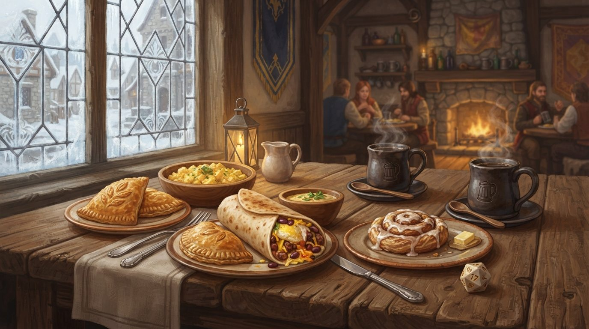

Every crumb comes from Martin-area bakeries, roasters, and food vendors. That's a promise, not a preference — when you buy breakfast here, the money stays in Weakley County twice: once with the local kitchens that made it, and once with the con.
We're building the morning lineup now, and we want your best on our tables. Pastries, pies, burritos, beans — if you make it near Martin, let's talk. Reach out via the con organizers or say hello at One Frequency Games.
Rations & Rolls is run by WinterCon itself — breakfast sales help fund the con and seed our mid-summer event.
Open books, as always: every dollar in and out gets published.